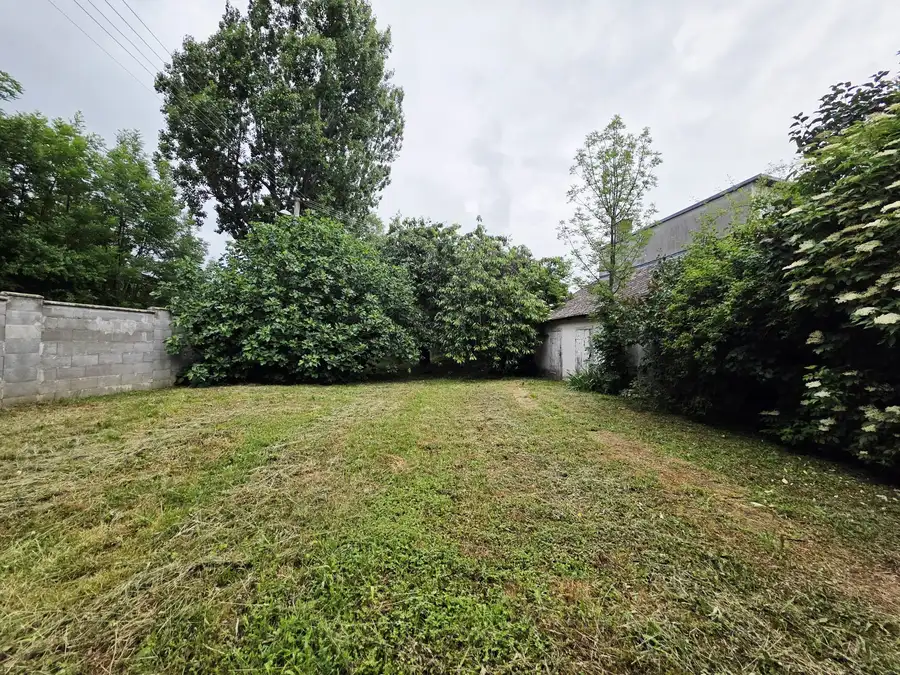
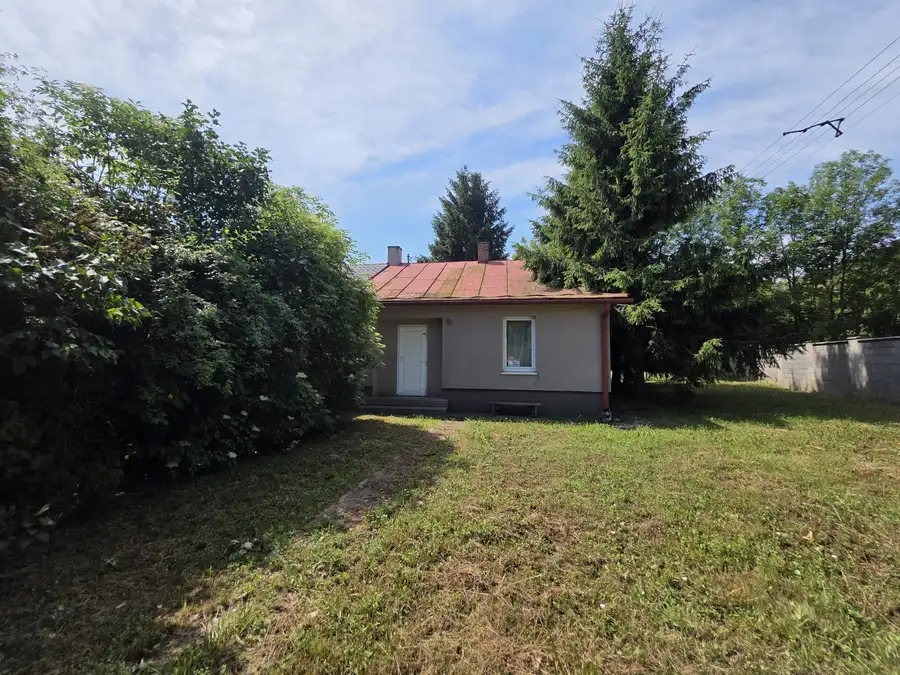
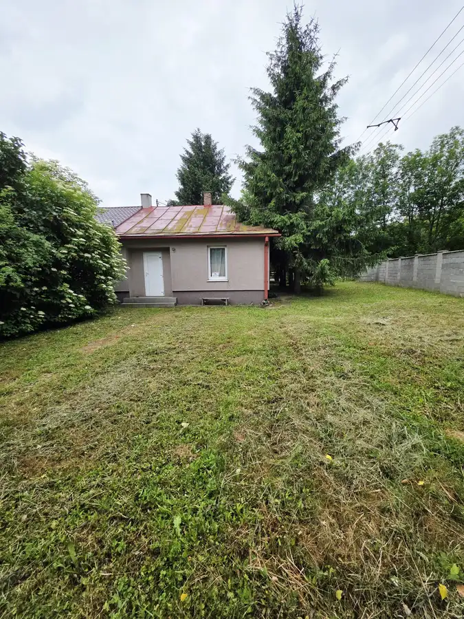
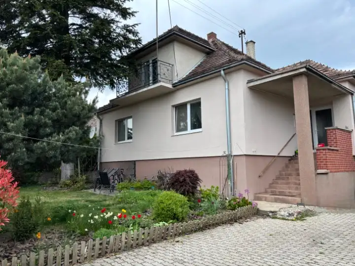
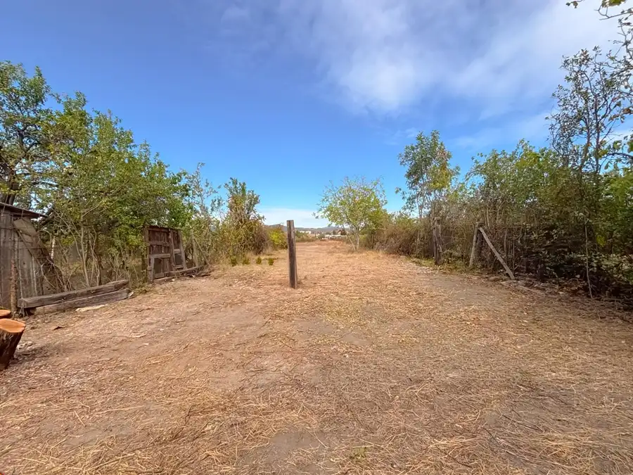

Areté real - predaj pozemku v Pezinku s veľkorysou výmerou 692 m2
Pezinok



- Plocha692 m²
- VlastníctvoOsobné
O nehnuteľnosti
ARETÉ REAL- Hladáte slnečný, veľkorysý pozemok? Ak áno, máme pre Vás túto jedinečnú ponuku, v tichej lokalite, kde sa predáva ojedinele, na ulici Kutuzovova.Na pozemku sa nachádza starý dom zo 60 tich rokoch. PozemokPriestranný pozemok je 20,67m široký, slnečný s veľkorysou výmerou 692m2. Pozemok je oplotený, z prednej strany je bránka s oplotením.Veľkým bonus pozemku je neskutočná, obrovská rodiaca čerešna, /sladučké plody/, daľej rodiaci figovník so sladkými plodmi, baza, ktorá práve kvitne. Z bočnej strany domu je ihličnatý strom.Na dvore sa nachádza prívod vody. Inžinierske siete- mestská voda, elektrika, kanalizácia.Priestranná záhrada má veľa možností využitia, ako postavenie bazéna, altánku, pestovanie zeleniny, kvetiniek a podobne. Na svoje si prídu detičky aj domáci miláčikovia. Pozemok je posledný v rade, rožný, čo poskytuje väčšie súkromie.OkolieOkolie poskytuje veľa možností ako cykloturistika, prechádzky do Kučišdofskej doliny, priehrady. Na relax, posedenie, oslavy je na skok bowling a podobne. V blízkosti je zastávka MHD a SAD.Nech sa páči, neváhajte ma kontaktovať tel.- 0903 467 665 Čechová, mail- viera@arete.skSpoločnosť Areté real, s. r. o. nezodpovedá za správnosť, úplnosť a presnosť informácií uvedených v tomto inzeráte, ktoré majú iba informatívny charakter.Naša realitná kancelária Areté real, s. r. o. Vám ponúka v rámci ceny nehnuteľnosti:-zmluvy autorizované advokátom-zabezpečenie vyhotovenia kúpno predajných zmlúv, návrhu na vklad do katastra -úhradu poplatku za podanie návrhu na vklad vlastníckeho práva do katastra-úhrady poplatku za overenie podpisov na kúpnych zmluváchPonúkame Vám ďalej BEZPLATNÉ HYPOTEKÁRNE PORADENSTVO, kde Vám náš hypotekárny špecialista zariadi výber najvýhodnejšieho modelu financovania pre Vašu nehnuteľnosť, spojeného s kompletizáciou spracovania podkladov k žiadosti o úver.
Parametre
- Druh
- Pozemok pre rodinné domy
- Dátum zverejnenia
- 02. 07. 2026
- Elektrina
- Na pozemku
- Odpadové vody
- Na pozemku - Kanalizácia
- Plocha pozemku
- 692 m²
- Typ
- Predaj
- Vlastníctvo
- Osobné
- Voda
- Na pozemku
- Šírka pozemku
- 20
Kde to je


Mohlo by Vás zaujímať

DomNové 460 000 €Predaj-domov plný svetla, pokoja, priestoru- nový domov pre rodinu ktorá túži po pokoji s dotykom prírody v meste Modra Modra 100 m²
PozemokNové Cena na vyžádáníArete real- predaj záhrady v blízkosti centra mesta Pezinok Pezinok 1202 m²